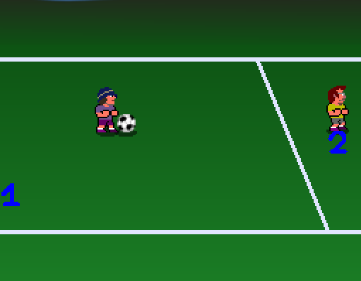
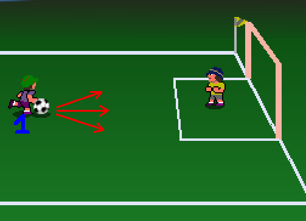
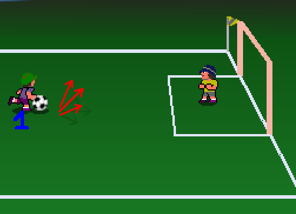
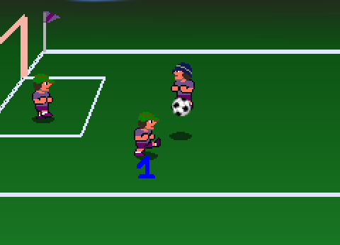
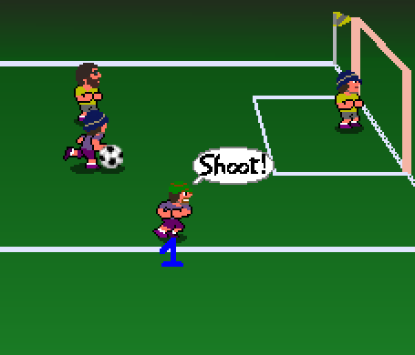
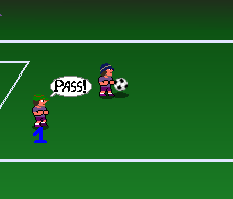

How to play:
Player 1: arrows (to move) + K (to shoot or attack), L (to pass); or joystick 1
Player 2: F, G, H (to move) + A (to shoot or attack), Z (to pass); or joystick 2
You are the capitain of your team, marked by a blue "1" or "2" under his feet. You can not change which player you are.
To move use the arrows. The camera is always on the ball.

When your player is out of the screen, its number is written on the edge f the window to show you in which direction you are.
When you have the ball, press K to shoot.
You can add a direction when pressing the key to choose where the ball will go.

If you press "forward" direction while shooting, the ball will go straight and fast. Add "up" or "down" to choose a direction.

If you do not press "forward" direction while shooting, the ball will go up. Add "up" or "down" to choose a direction.
When you have the ball, press L to pass it to your closest team-mate.

If you press a direction and L at the same time, you can pass the ball to your closest team-mate in this direction. If there is nobody in that direction, you make a feint.
When you do not have the ball, press K to attack.

Be careful not to hurt your team-mates!
As you are the capitain of your team, you can give order to your team-mates. They will accept it or not. You are free to insist!

When a team-mate has the ball, press L to ask him to pass the ball (to the closest member of your team).
Press K to ask him to shoot. You can add a direction at the same time.